Augmented Reality mit smarten Kontaktlinsen als Hilfsmittel für Sehgeschädigte
Manuel Lang
Motivation
Augmented Reality
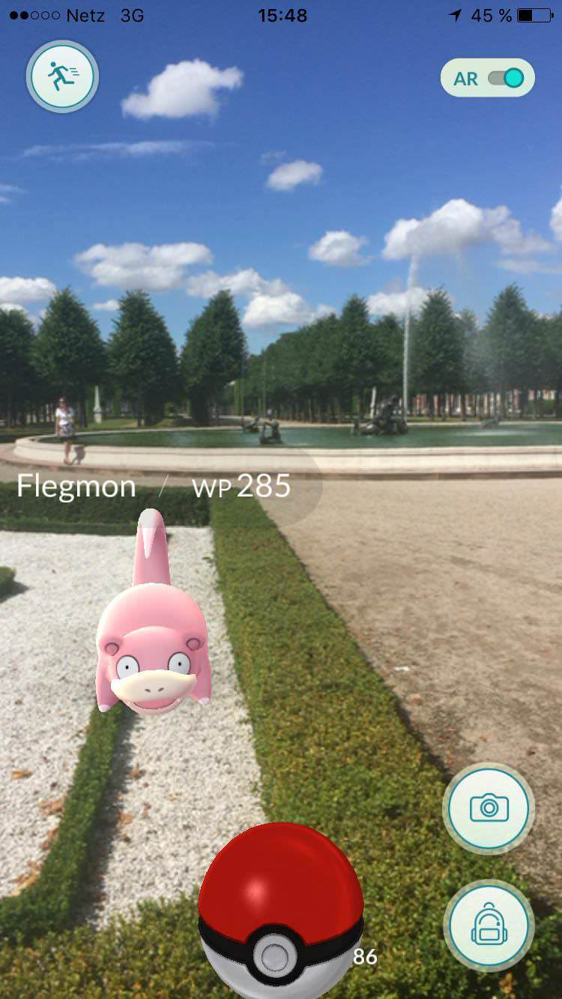
- Erweiterte Realität durch zusätzliche Einblendungen, z.B.
- erkannte Objekte
- Navigationspfeile
- Hinweise
- Nachrichten
- Lösungen mit Smartphones (ARkit / ARcore) oder speziellen Brillen (HoloLens, Google Glass, uvm.)
Probleme mit aktueller AR-Hardware
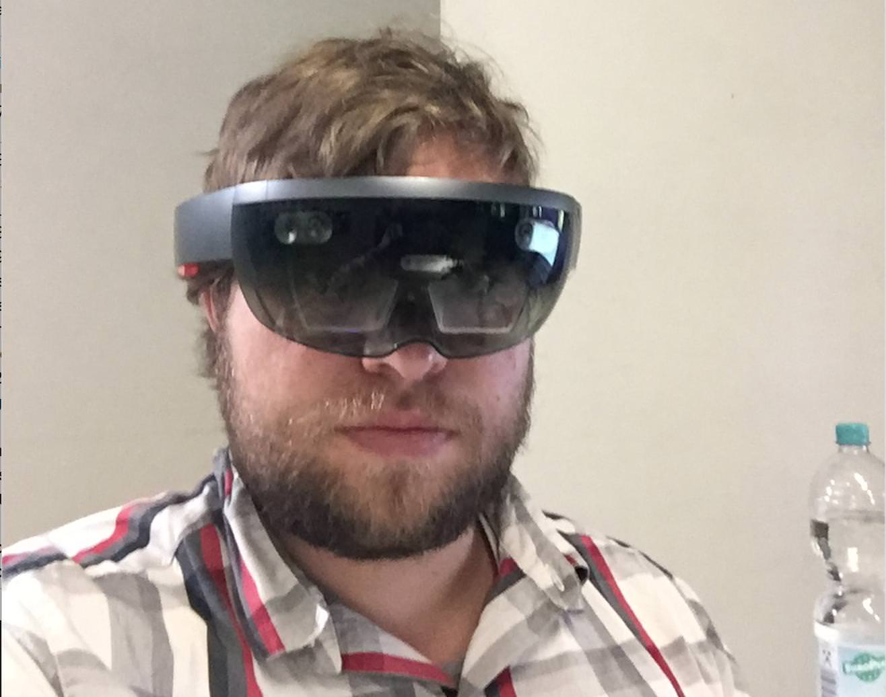
Preis: 3.299,00€ / 5.489,00€
- Brille
- stark eingeschränktes Sichtfeld
- geringe Akkulaufzeit
- schwer
- teuer
- unkomfortabel
- Smartphone zu kleine Anzeige
Kontaktlinsen
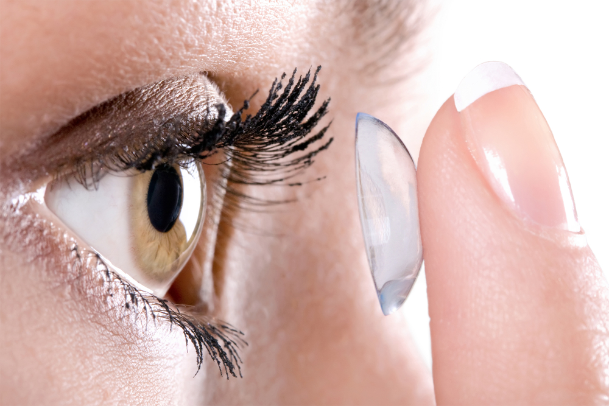
- komplettes Sichtfeld
- unauffällig
- günstig
- gut verträglich
- gut erforscht
Android Things (Developer Preview)
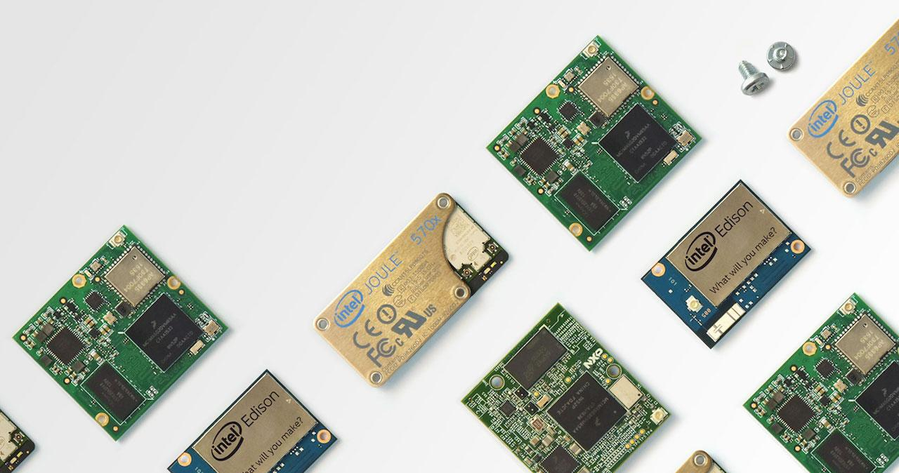
- OS für IoT-Hardware
- Hohe Leistung (1GHz x2)
- WLAN & Bluetooth
- Android Unterstützung
- Google Assistant auf Smart Displays
TensorFlow Lite
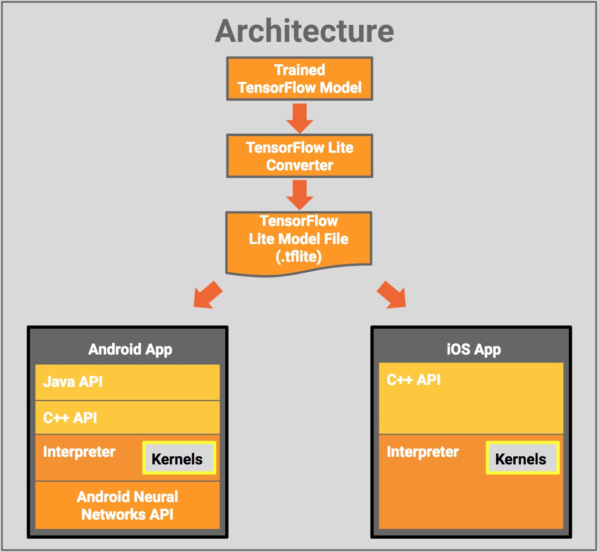
- Unterstützung neuronaler Netze für Mobilgeräte (Smartphones)
- Realisierung mit Android Things möglich
- u.a. MobileNet und Inception v3
Nutzen neuronaler Netze

YOLO v2 Object Detector
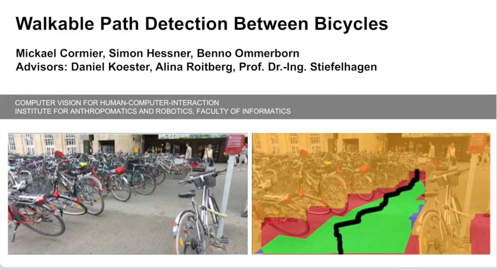
KIT Praktikum CVHCI
Was fehlt?
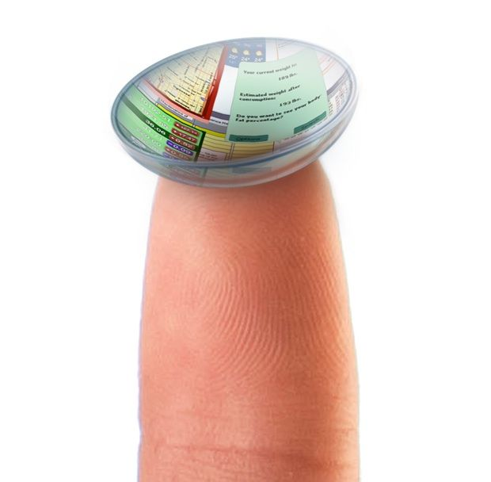
- Alltagstaugliche AR-Hardware
- unauffällig
- bezahlbar
- komfortabel
- Universelle Brillen / Kontaktlinsen (jede Entfernung)
- Also: AR-Kontaktlinsen?
Technische Herausforderungen
Haltbarkeit der Linsen
- Tages- / Monats- / Jahreslinsen
- Bisher nur kurze Haltbarkeit realisierbar
- Trend: Verringern der Produktionskosten
- Problem: Reinigung
Bio-Verträglichkeit der Linsen
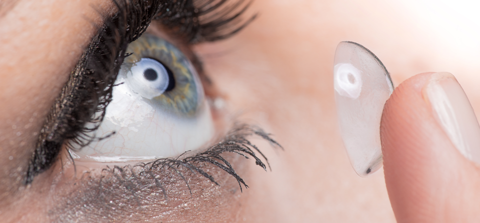
- Verträglichkeit nötig
- Lösung durch Einbettung in herkömmliche Linsen
- Strom / WLAN in Augennähe?
Konkave Form der Linsen
- Komponenten auf Linsen müssen ebenfalls konkave (nach innen gewölbte) Form besitzen
- Spezielle Komponenten existieren, sind aber meist noch nicht marktreif
- Stromversorgungseinheit
- Stromkreise
- Antennen / Kommunikationsmittel
- Anzeigen
- Recheneinheit
- Kamera
- Sensoren
Stromversorgung
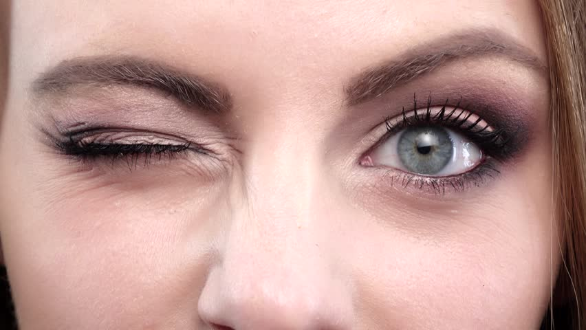
- Blinzeln
- Solar-Energie
- Biokraftstoff-Zellen
- Wärmeenergie
Anzeige
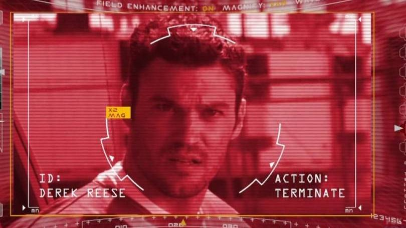
- Geringer Abstand zum Auge problematisch
- Fokus schwierig
- geringe Auflösungen (wenige Pixel)
- Detailreiche Anzeigen (noch) unrealistisch
Kommunikation mit anderen Geräten
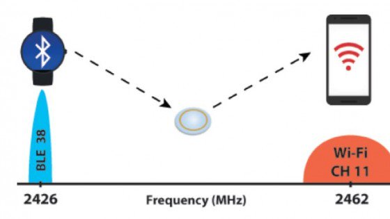
- WLAN und Bluetooth sind klein aber benötigen viel Leistung
- RFID benötigt wenig Leistung, ist aber groß
Aktueller Stand*
* hier handelt es sich meist um reine Proof-of-Concept Lösungen, die noch nicht marktreif sind
Erfassen von Informationen
Sichtkorrektur
Augmented Reality
Seoul National University
- Graphen-basiertes Material (Kohlenstoff)
- Messung von magnetischen Wellen
- Vorbeugung vor Dehydrierung
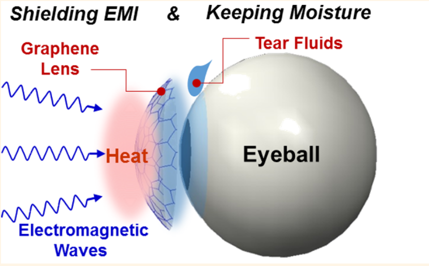
Verily (Alphabet)
- Messen von Blutzucker durch Tränenflüssigkeit
- 415 Millionen Menschen leiden an Diabetes
- $800M Investion 2017
- 2017 angekündigte Tests fanden nicht statt
- Kosten: $200 - $300 (x2)
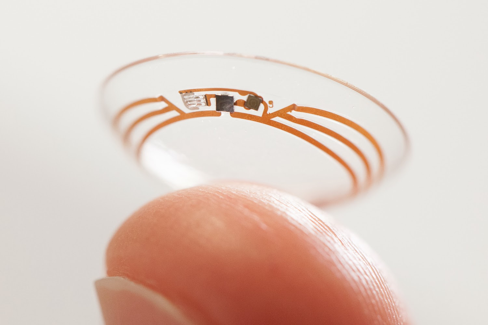
Funktionsweise Verily (Alphabet)
- Hardware in zwei Linsen eingebettet
- Durch Loch in äußerer Linse gelangt Tränenflüssigkeit ins innere
- Glukosesensor misst Blutzuckerwert anhand der empfangenen Tränenflüssigkeit
- Daten werden über Antenne an externes Gerät weitergeleitet
Medella Health
- Kanadisches Startup
- Herstellungskosten ~ $25
- $1.4M Investition 2017
Gibt
Korea Institute of Science and Technology (KIST)
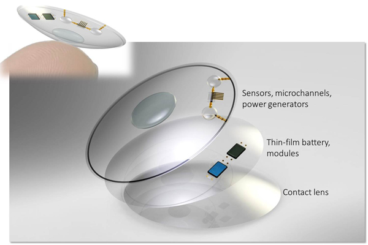
- Ähnlich wie Verily und Medella Health
- Zusätzlich Diagnose von Diabetes (Tracking der Messwerte)
SensiMed
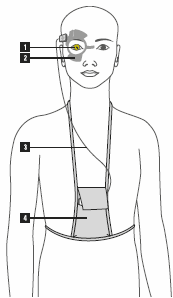
- Messen von Umfangsänderungen des Auges [1]
- Senden an Antenne [2]
- Übertragen durch Kabel an Aufzeichnungsgerät [3]
- Übertragen via Bluetooth an Computer [4]
Erfassen von Informationen
Sichtkorrektur
Augmented Reality
ColorMax
- Farbeindruck entsteht durch Wellenlänge des Lichts

- ColorMax Linsen filtern Wellenlängen für *individuell* richtige Farbwahrnehmung
- Funktionierender Ansatz, aber (noch?) nicht smart
Visioneering Technologies, Inc.
- Tageslinsen
- Hilfe bei Presbyopie (Altersweitsichtigkeit)
- Autofokus (automatisches Scharfstellen)
Erfassen von Informationen
Sichtkorrektur
Augmented Reality
eMacula
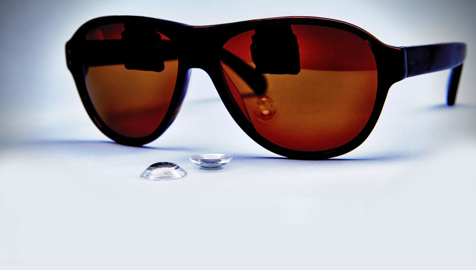
- Kombination von Brille und Kontaktlinsen
- Projektion von Brille (Full-HD) auf Linsen
Ausblick
EPGLmed
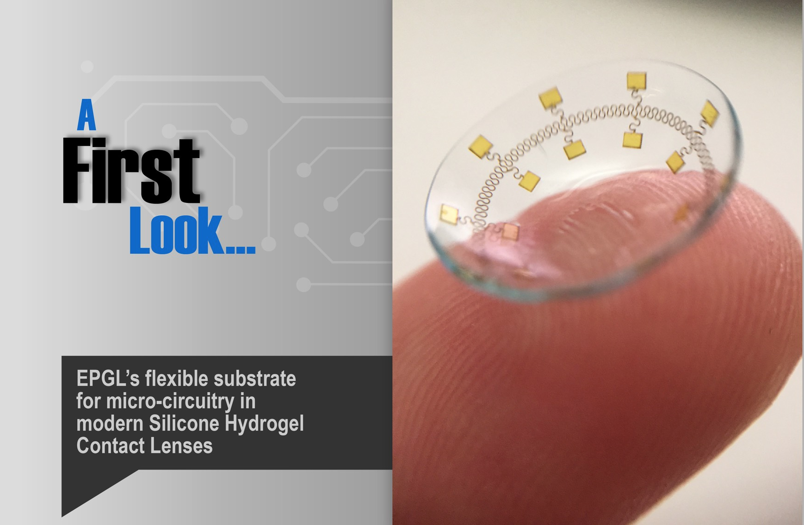
Aktuelle Patente u.a. Energieversorgung, Sensoren, Auflademethoden, Stromkreise für smarte Kontaktlinsen, Autofokusmechanismen
Samsung
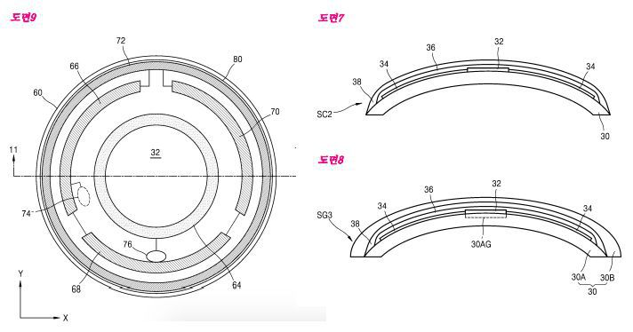
- eingebettete Kamera
- erfassen Bewegung von Auge und Lidschlag
- drahtlose Energieübertragung mit Smartphone
Sony
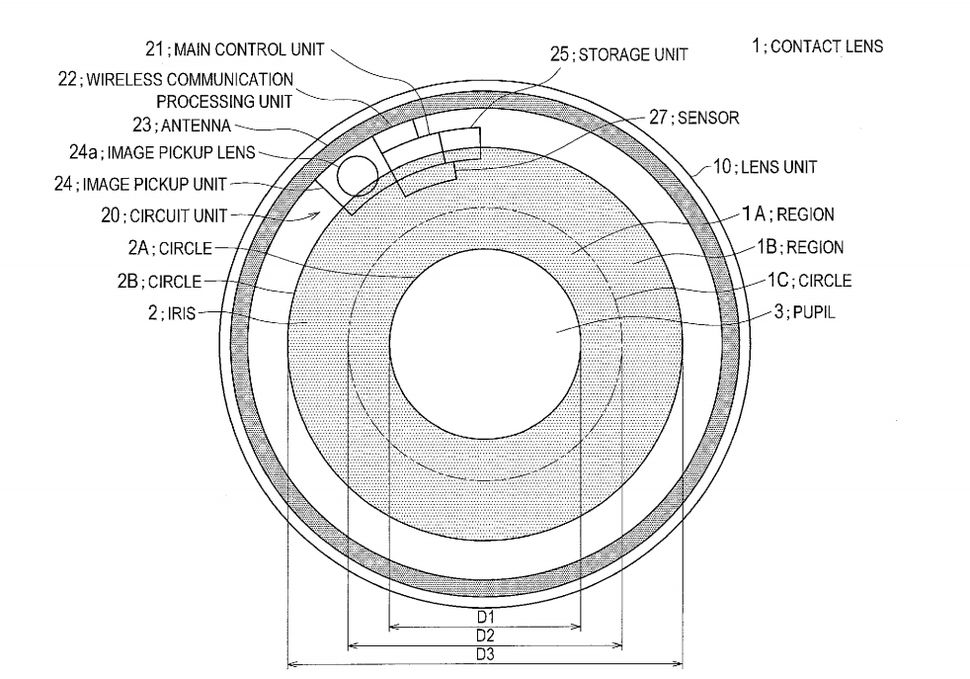
- Fotos & Videos
- Umwandeln der Energie von Liedschlägen
- Sensoren erkennen bewusstes Blinzeln
- Autofokus
- Smarte Belichtung
- Zoom-Funktion
Zusammenfassung
- Smarte Kontaktlinsen ...
- liefern Erkenntnisse über biologische Informationen
- diagnostizieren Erkrankungen
- schützen Menschen vor Augenerkrankungen
- können Farbfehlsehen korrigieren
- können mit Kameras ausgestattet werden
- kommunizieren kabellos mit anderen Geräten
- Smarte Kontaktlinsen helfen Menschen ...
- mit Diabetes (Google Lens, Medella Health, KIST)
- mit Farbfehlsehen (ColorMax)
- mit empfinglichen Augen (SensiMed)
- mit Altersweitsichtigkeit (VTI)
- aber auch hochgradig Sehgeschädigten / Blinden?
- Smarte Kontaktlinsen werden* ...
- als Augmented Reality Produkt von Google, Apple**, Samsung, Sony, uvm. entwickelt
- 3D-Wahrnehmung erleichtern
- Umgebungsinformationen (Hindernisse, Menschen, Objekte) erkennen
- Fotos aufnehmen und auf anderen Geräten auswerten und speichern
* ausgehend von vorgestellten Patenten
** als Investor bei EPGL
Smarte Kontaktlinsen - ein Allheilmittel?
- Kontaktlinsen werden auch ...
- für militärische Zwecke entwickelt
- Nutzungsverhalten analysieren können
- Werbung anzeigen können
- Videos aufnehmen
- Auswirkungen von Antennen, Sensoren und anderen stromdurchflossenen Komponenten sehr nahe der Augen noch unklar